TDK TAS2141 Characterization
TDK characterization as base of the sensor array simulation was done before the dataset is just modified in its structure and not in its values. An additional info struct is added which contains information about how the dataset was aquirred and a data struct which contains the magnetic field resolution and the cosinus and sinus bridge images for variable Hx and Hy fieldstrengths. The raw dataset was aquirred after the method Thorben Schüthe describe in his IEEE paper for two-dimensional characterization of TMR angular sensors. The sensor characterized for both bridges a cosinus and sinus bridge. The bridges have a phisically phase shift of 90° so the sensor as able to reference a superimposed magnetic field flud in x- and y-direction. The field was generated by an cross coil setup.
Contents
See Also
Created on October 27. 2020 Tobias Wulf. Copyright Tobias Wulf 2020.
Magnetic Stimulus
The right stimulus is the keynote for characterization records. It needs to have the abillity record slow enough for quasi static recordings but is not allowed to be real static so the magnetic field is not interrupted during the recording. Therefore slow sinoid carrier functions with even slower amplitude modulation is choosen to provide a quasi static stimulus.
The carrier function for the Hx-field stimulus is related to the cosinus bridge and so:
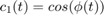
Due to the physically phase shift the Hy-field stimulus is related to sinus:
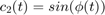
Both carrier runs with same carrier frequency:
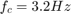
so they are executed with the phase vector over time:
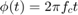
The carrier functions are triangle modulated to generate rising and falling amplituded. The modulation frequency is set to:
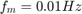
Which generates a stimulus with 320 periods where 160 periods feeds a rising and falling record each multiplied with maximum fieldstrength amplitude:
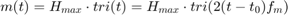
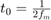
So the Hx- and Hy-field stimulus is described by:
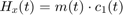
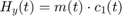
The stimulus amplitude depending on the phase in polar coordinates can be displayed for both parts by:
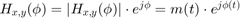
Where a rising spiral runs from center outwards for:
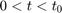
And a falling spiral of amplitudes from outwards to center for:
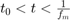

Cosinuns Bridge Output
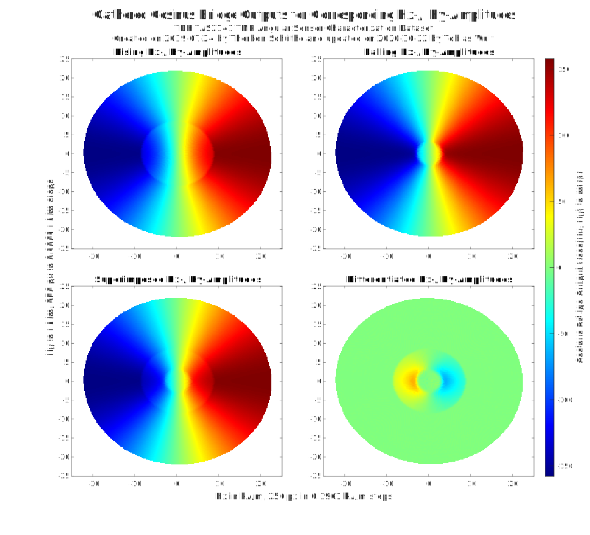
Sinus Bridge Output